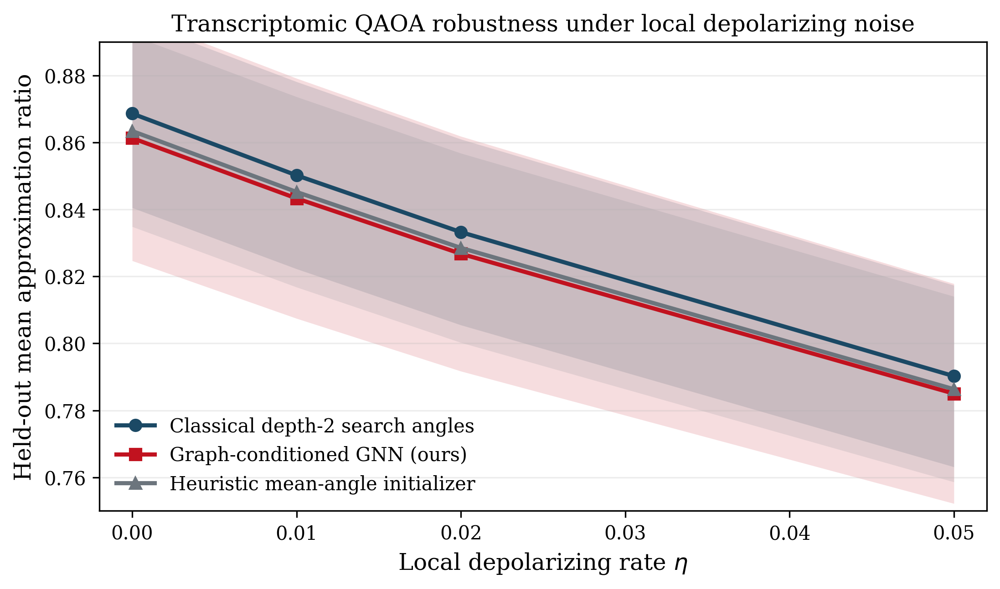

Direct multi-start search is expensive, graph-specific, and repeated every time a new biological graph is introduced. In a realistic analysis setting, that limits scalability far earlier than the nominal four-angle depth-2 parameterization might suggest.
Research Summary
Hybrid Quantum Graph AI QAOA GNN Biomedical Optimization
Overview
Learning QAOA Parameters with Graph Neural Networks for Scalable Quantum Optimization
We study parameter optimization in the Quantum Approximate Optimization Algorithm, a central bottleneck in near-term quantum computing. We propose a data-driven approach in which a graph neural network predicts high-quality fixed-depth QAOA parameters from weighted graph structure, improving held-out optimization performance while sharply reducing online search cost.
We demonstrate that learning QAOA parameters via graph neural networks improves optimization performance and generalization across held-out graph instances in the fixed-depth regime studied here. The claim is not quantum advantage. It is that repeated parameter search on a structured graph family can be amortized, formally analyzed, and audited against exact downstream objectives.
Problem
Fixed-depth QAOA is often limited by parameter search, not by ansatz definition.
For each new weighted graph instance, standard QAOA requires another classical outer-loop optimization over the angle vector. On a repeated family of structured transcriptomic graphs, that per-instance search cost becomes the practical bottleneck. The question for this paper is therefore concept-first: can graph structure itself be used to predict useful QAOA angles before optimization begins?
A useful learned initializer does not need to beat direct search. It needs to preserve the downstream MaxCut objective closely enough that repeated search can be replaced at inference time without materially degrading decision quality.
Key Idea
Reformulate QAOA parameter optimization as a supervised graph learning problem.
Input graphs are encoded by a graph neural network that predicts fixed-depth QAOA parameters directly. The model is trained against reference angles from multi-start classical optimization, but it is evaluated only through the downstream objective it preserves on unseen graphs. This turns repeated parameter tuning into graph-conditioned prediction.
G -> f_phi(G) = (gamma_1, gamma_2, beta_1, beta_2) -> exact depth-2 QAOA evaluation -> approximation ratio and latency
Graph-conditioned prediction nearly matches direct search on held-out weighted biological graphs.
The manuscript adds theorem-level support: encoding correctness, regret control, expressivity separation, trainability, and resource scaling.
The evidence is extended beyond ideal simulation to an executed depolarizing-noise benchmark on the same held-out family.
Method
Graph structure is encoded, mapped to parameters, and evaluated in the QAOA circuit.
The core method is intentionally simple to state. The transcriptomic branch is the primary APS-relevant result. The CTG branch remains secondary and illustrates how the same graph-to-decision formulation extends to a cohort-level biomedical optimization problem.
Step 1
Build weighted transcriptomic co-expression graphs from the reduced prostate expression panel.
Step 2
Solve each adaptation graph by multi-start depth-2 classical QAOA optimization to obtain reference angles.
Step 3
Train a GNN to predict the four-angle vector from graph structure and node attributes.
Step 4
Evaluate only the downstream objective on held-out graphs, including noisy density-matrix simulation.

Results
We show improved approximation quality, faster optimization, and better held-out generalization than simpler learned baselines.
Primary transcriptomic benchmark
| Method | Mean ratio | Std. dev. | Median runtime |
|---|---|---|---|
| Classical depth-2 search | 0.8686 | --- | 936.1255 ms |
| Heuristic initialization | 0.8634 | 0.0313 | 0.3249 ms |
| Affine graph-feature regressor | 0.8208 | 0.0678 | 0.5905 ms |
| Graph-conditioned GNN | 0.8682 | 0.0312 | 0.3652 ms |
Interpreted correctly, the result is 99.95% retention of the direct-search objective with much lower online latency. It is evidence for improved fixed-depth initialization and held-out generalization across this structured graph family, not for asymptotic quantum speedup.
Executed depolarizing-noise study
| Method | eta = 0 | eta = 0.01 | eta = 0.02 | eta = 0.05 |
|---|---|---|---|---|
| Classical-search angles | 0.8686 | 0.8502 | 0.8332 | 0.7902 |
| Graph-conditioned GNN | 0.8613 | 0.8433 | 0.8268 | 0.7850 |
| Heuristic mean angles | 0.8634 | 0.8452 | 0.8285 | 0.7863 |
The observed degradation is smooth rather than abrupt, which is consistent with the manuscript's contraction analysis for local depolarizing noise.


Secondary Instantiation
The CTG branch supports the graph-to-decision formulation, but it is not the main physics claim.
What it adds
The cardiotocography case study shows that the same graph-conditioned interface can be written as a cohort-level optimization problem with an explicit QUBO/Ising representation. It contributes translational breadth and a concrete downstream decision setting.
What it does not add
It does not establish that graph methods dominate strong tabular baselines in medical prediction. The manuscript itself states that calibrated LightGBM remains slightly stronger on the reported split, so this branch should remain secondary in the landing-page narrative.
Significance
The method enables more scalable and computationally efficient fixed-depth quantum optimization.
It demonstrates that fixed-depth QAOA parameter search can be amortized on a structured weighted graph family without giving up materially useful objective quality.
It replaces repeated outer-loop search with graph-conditioned inference, making repeated evaluation over related problem instances materially cheaper.
It supports a problem-first view in which structure-aware learning makes fixed-depth QAOA easier to deploy on repeated families of weighted optimization instances.
The right PRX-style framing is therefore: problem, theory-backed method, quantitative retention against the relevant baseline, and carefully bounded implications. The wrong framing is a product-demo narrative or an unqualified claim of scalable quantum advantage.
Limitations
What a serious reviewer will still question
- The graph family is small and exact-audit by design, so the work supports a controlled fixed-depth result rather than a large-scale asymptotic claim.
- The theoretical results strengthen the manuscript materially, but a top-tier reviewer will still ask how far they generalize beyond the finite-family regime and beyond the affine-regressor comparison class.
- The heuristic mean-angle baseline is already competitive, so the strongest interpretation is conditional: graph conditioning matters most when optimal angles vary systematically with graph structure.
- The CTG branch is useful for methodology breadth, but it should not be allowed to distract from the main QAOA claim in the page hierarchy.
Paper and Code